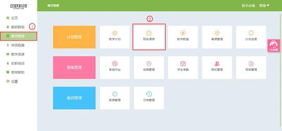

班级课表使用说明
视频教程：
根据学校安排的排课计划，在系统中对应各教师的授课时间进行同步选择。
1. 登录动跃体育教学管理平台后，进入平台操作界面。
2. 点击进入教学管理 > 点击班级课表，如下图:

3. 点击班级课表后，弹出窗口，按授课需求选择对应学年点击确定。

4. 进入班级课表界面后，选择需要排课的年级，选择该年级下需要排课的班级，教师选择安排该班级使用的教学计划，黄色色块为已选择的年级班级。
5. 点击解锁按钮，进入课表编辑授课表模式, 点击课表安排课程，如下图:
6. 点击课表空白格，根据教师实际授课课程情况，进行排课，黄色为已经选好的课表。
7. 点击保存操作内容，同时会退出编辑模式。